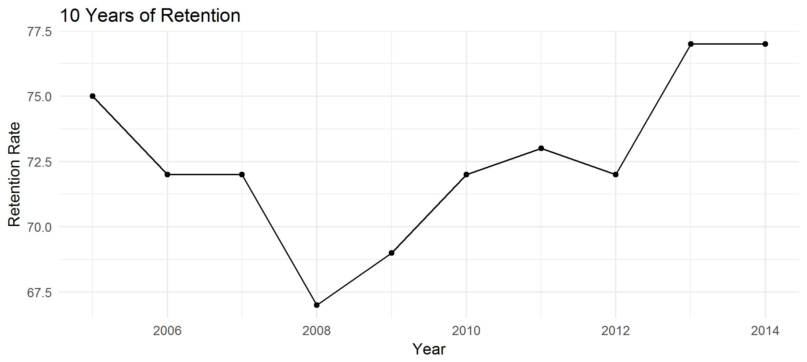

Simulating Retention Rates
How Can We Tell If an Institution is Improving?
The retention rate at any given instiution will fluctuate over time. For example, the data in the plot below represent the retention rates from 2005 to 2014 of an institution selected at random from the IPEDS Universe. We can clearly see that the rate falls and rises from year to year, but does that actually mean that it’s changing? It may not; the variations could simply be random chance. If we want to be serious about graduation rates, or retention rates, we need to think probabilistically.
Let’s take the average of these data over the 10 year period: 72.6, and assume that this is a good approximation of the true graduation rate. After all, it’s all we really have for making such an approximation.
Understand that the true graduation rate is really something that is out of our reach in practice. Conceptually, it is simply the rate that we would end up with, if we could admit and a very large number of classes and subject them to the same educational experience. Although it isn’t feasible to do this, we can simulate doing it.
Student retention is a binomially distributed variable; a student
either graduates or not. The retention rate of the class of students
is the proportion of the class retained, and its sampling distribution
is approximately normally distributed.
With this information and the 10 year average rate, we can use R to
simulate a large number of trials and analyze their distibution.
> qplot(
trials, main = "Distribution of Random Trials",
xlab = "Retention Rate", ylab = "Count") +
geom_histogram(color = 'black') +
theme_minimal()

Just by looking at the histogram, we can see that values ranging from 70 to 75 are not really unusual observations. Although the decline in the retention rate might have caused the administration on campus some anxiety, there is really no need to worry. Statistically, these rates are still part of the same distribution. In other words, the real rate hasn’t actually changed at all. The histogram is a good representation of this distribution, but a confidence interval can give more precise boundaries.
> upper_est <- quantile(trials, 0.995)
> print(paste(lower_est, upper_est))
[1] "0.700 0.752"
On this campus, we would like to observe a rate greater than 75.2% because this could be a sign of real improvement. On the other hand, a rate less than 70.0% could be cause for concern. Still, there is a good deal of variance in this distibution. It is probable that observations of the rate will continue to be in flux. So, we should think probablisitically about graduation and retention rates. This allows to have a method for detecting change in the rate, hopefully improvement, and it gives us perspective when the observed rate fluctuates.
Last Updated: May 6, 2018